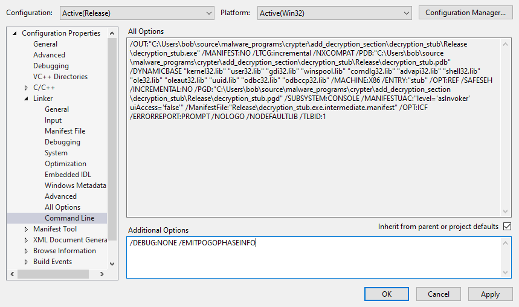

# Visual Studio Compiler Options
There are lots.
I'm just keeping track of the ones I read/learn about.
## /O1, /O2 (Minimize Size, Maximize Speed)
•
https://docs.microsoft.com/en-us/cpp/build/reference/o1-o2-minimize-size-maximize-speed?view=msvc-160## /DEBUG
Will create a .pdb file.
Set to NO and no .pdb file will be created and present in the PE.
## /MANIFESTUAC:level - UAC Execution Level
asInvoker will run as current privleges.
highestAvailable will prompt the user for credentials / UAC permission if they're an Administrator.
(the highest available perms are Administrator, so it tries to run as that)
requireAdminstrator forces an Administrator credentials prompt.
## /EMITPOGOPHASEINFO
https://stackoverflow.com/questions/45538668/remove-image-debug-directory-from-rdata-section/EMITPOGOPHASEINFO is undocumented.
Can be used to remove the DEBUG directory from .rdata in your compiled PE file.
Best used in conjunction with /DEBUG: NONE (or Linker > Debugging > Generate Debug Info > No)
Add into
Linker > Command LineSHOULD BE USED WITH
/DEBUG:NONE AS WELL
/DEBUG:NONE /EMITPOGOPHASEINFOTested with x86 Release build and it works.
Dropped PE into pestudio and it found no debug directory.